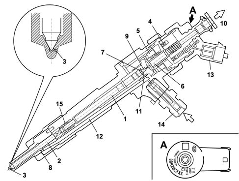
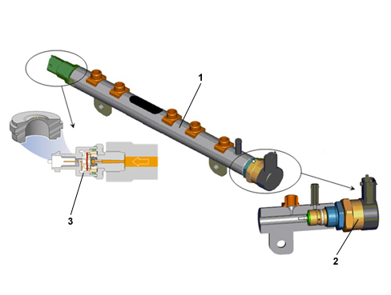

INTRODUCTION - INJECTORS AND LINES
- Path
- Descriptions > 10 ENGINE > 1060 DIESEL INJECTION SYSTEM > 1060F INJECTORS AND PIPES > INTRODUCTION - INJECTORS AND LINES
- Kind
- system description
- Applies to
- engines: 2.4 JTD 20v; all production periods
- Interactive page
- https://sloeber94.github.io/elrnDB-aBrrSpdr/en/#/946003086
Applies to: engines: 2.4 JTD 20v; all production periods
DESCRIPTION OF COMPONENTS
INJECTORS
The injectors are fitted on the cylinder head and controlled by the injection control unit.
The injector may be divided into two sections:
- actuator/nebuliser consisting of pressure rod (1), pin (2) and nozzle (3);
- control solenoid consisting of coil (4) and pilot valve (5).
Injector operation is divided into three stages.
REST POSTION, the coil (4) is deactivated and the shutter (6) is in the closed position to prevent fuel from being introduced into the cylinder Fc > Fa (Fc: due to line pressure acting on control area 7 of rod 1; Fa: due to line pressure acting on feed volume 8).
START OF INJECTION, the coil (4) is energized and causes the shutter (6) to rise.
Control volume fuel (9) flows out towards return manifold (10) to bring about a pressure drop on control area (7). Simultaneously, the line pressure flowing through the intake duct (12) exercises a force Fa > Fc in the supply volume (8) to cause the pin (2) to lift and allow fuel into the cylinders.
END OF INJECTION, the coil (4) is deactivated and causes the shutter (6) to return to closed position. This rebalances the forces so that the pin (2) returns to the closed position and the injection ends.
Ima classification
During the test stage the injectors are checked with the specifications verified in different pressure/flow rate conditions. All the injectors that do not meet a certain standard are rejected; the remaining ones are classified using a 9 character alphanumerical code, known as an IMA code, imprinted by laser on the top part of the magnet.
During fitting on the vehicle the control unit should memorize the individual code and, if one or more injectors is replaced in a service situation the alteration to the code should be made during the diagnosis using the appropriate equipment.

1 - Pressure rod
2 - Pin
3 - Jet (6)
4 - Coil
5 - Pilot valve
6 - Spherical shutter
7 - Control area
8 - Supply volume
9 - Control volume
10 - Fuel return - low pressure
11 - Control duct
12 - Supply duct
13 - Electrical connection
14 - Fuel return connector - high pressure
15 - Spring
SINGLE FUEL MANIFOLD PIPE
The single fuel manifold (rail) is fited to the intake side of the cylinder head.
With a volume of around 33 cm³, this damps fuel pressure fluctuations due to:
- pressure pump operation
- injector opening.
The fuel pressure sensor is fitted on the delivery manifold
.
The hydraulic connections (high pressure) between manifold-pump and manifold-injecors are via steel pipes with a bore of 2 mm and external diameter of 6 mm.
